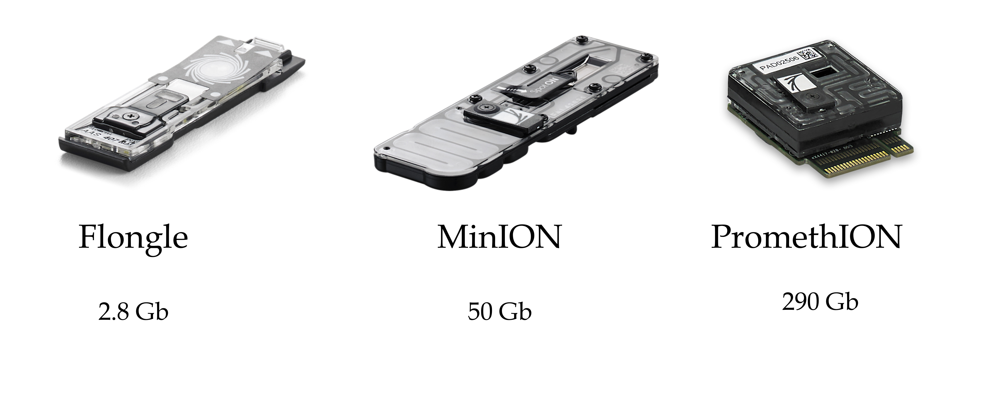
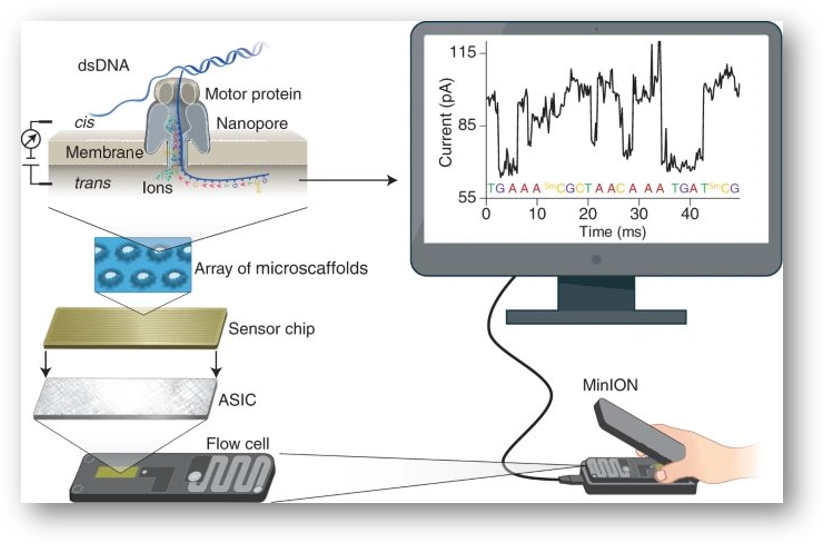
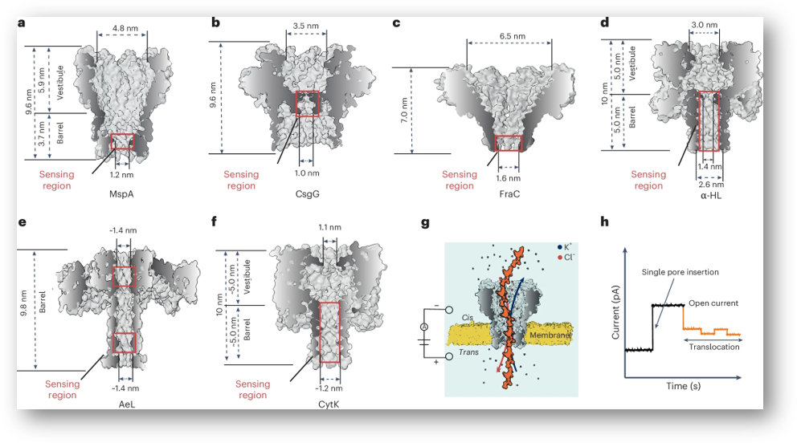
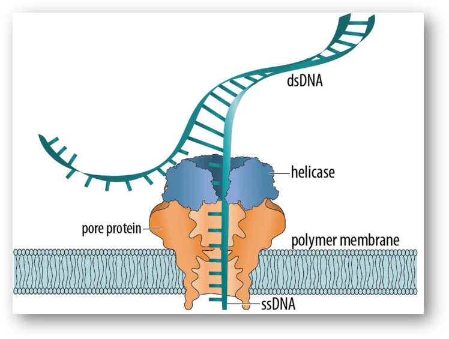
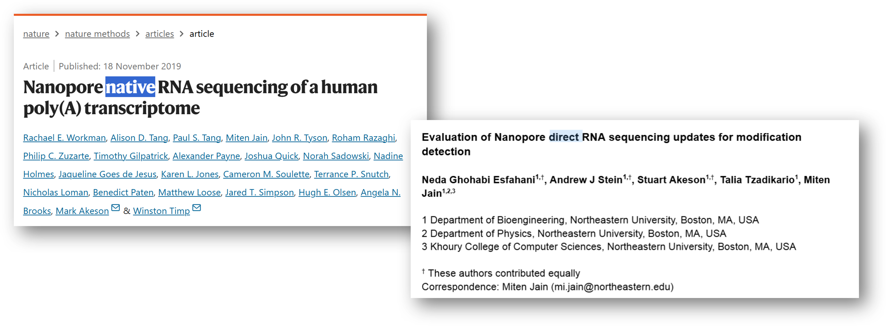
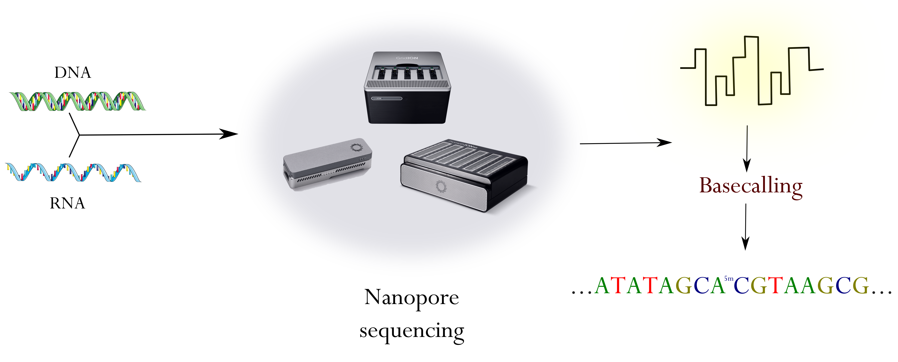
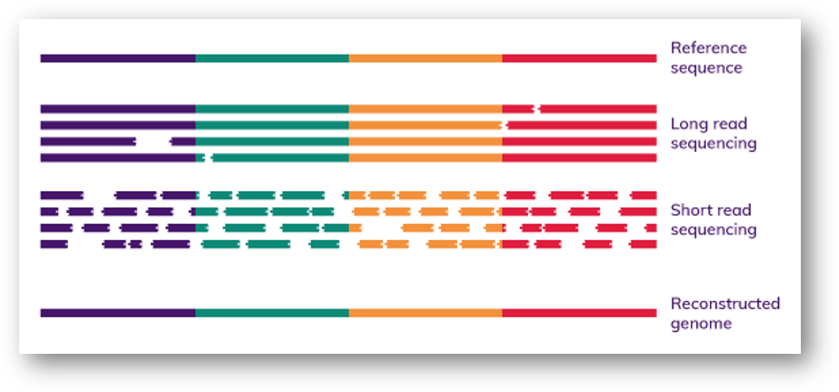
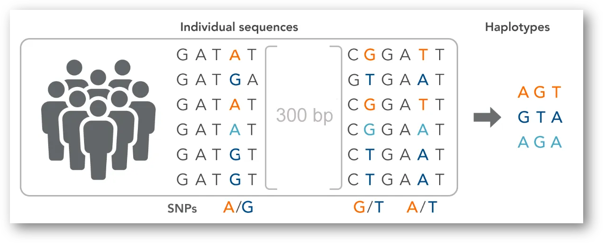
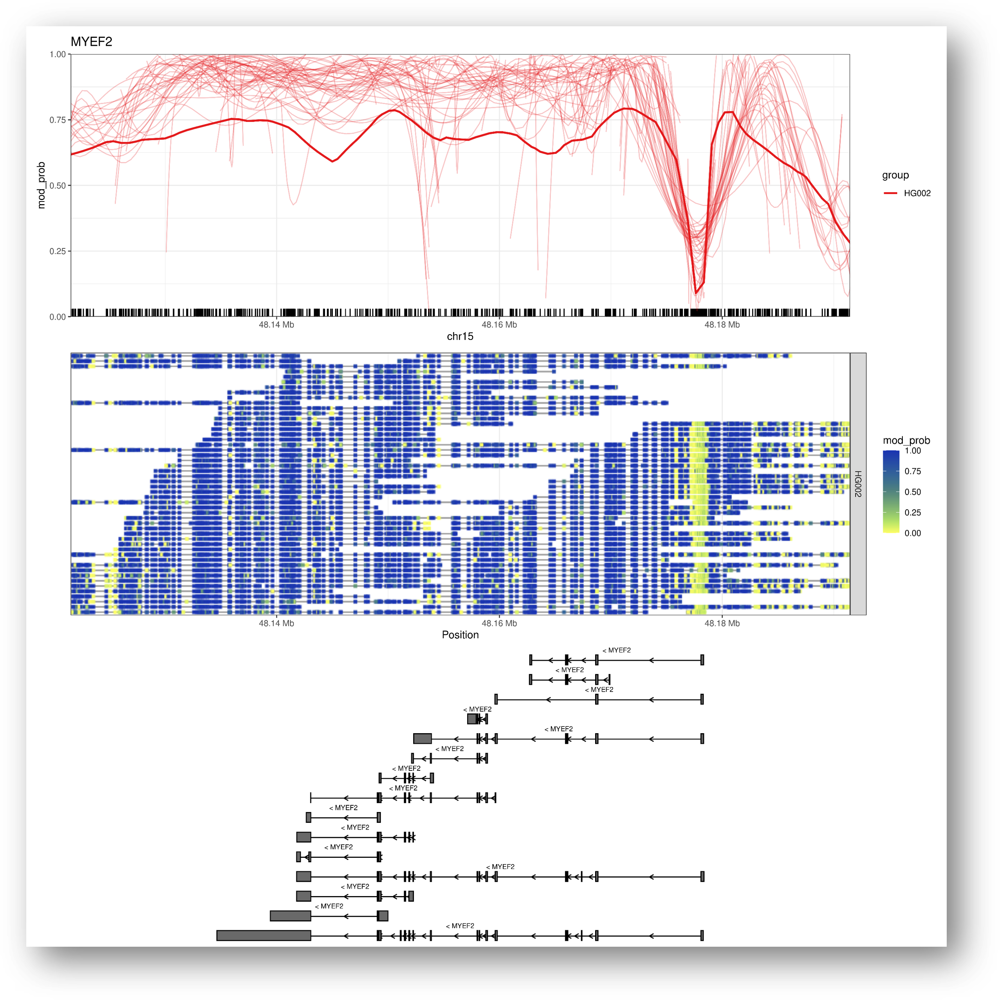

{kind=link}
| chr | start | end | gene | strand |
|---|---|---|---|---|
| chr1 | 1434861 | 1442882 | VWA1 | + |
| chr15 | 27754875 | 28099315 | OCA2 | - |
| chr15 | 98648539 | 98964530 | IGF1R | + |
| chr16 | 68737292 | 68835537 | CDH1 | + |
| chr17 | 7661779 | 7687546 | TP53 | - |
| chr22 | 45920366 | 45977162 | WNT7B | - |
| chr6 | 45328157 | 45664349 | RUNX2 | + |
| chr7 | 27153716 | 27157936 | HOXA7 | - |
Sequenciamento de Terceira Geração com Oxford Nanopore
Princípios e Aplicações em Bioinformática
Marcel Ferreira
2025-08-22
Sobre mim
Muito prazer..

- Marcel;
- Físico médico;
- Me e PhD em Biotecnologia;
- Desde 2023, pós-doutorado em genética;
Interesses
Métodos alternativos ao uso de animais;
Identificão humana via DNA;
Biologia do tecido ósseo;
Biomateriais;
Regeneração tecidual;
Ciência aberta;
Bioinformática
Projeto

Não sou da nanopore
Sobre vocês
Sobre vocês
Sobre essa disciplina
Primeira edição (de muitas…🙏)
- Desde maio estou como colaborador no programa de Genética do IBB;
- Infelizmente não terá pratica de bancada;
- Vamos aprofundar sobre aspectos de bioinformática das análises;
- Vamos focar em genômica e epigenômica;
Desafios 🚵
Bancada..
Requisitos computacionais…
Tempo…
Programas…
Material online
Fruto do meu projeto
Método do ano de 2022
Passar os atalhos
Bioinformática
- NIH: “Bioinformatics, as related to genetics and genomics, is a scientific subdiscipline that involves using computer technology to collect, store, analyze and disseminate biological data and information, such as DNA and amino acid sequences or annotations about those sequences.”
Bioinformática
- NIH: “Bioinformatics, as related to genetics and genomics, is a scientific subdiscipline that involves using computer technology to collect, store, analyze and disseminate biological data and information, such as DNA and amino acid sequences or annotations about those sequences.”
Bioinformática
- Não vamos focar nos algoritmos;
- Mas sim nos dados produzidos e como analisa-los;
Cronograma
Dia 1 - Manhã:
Apresentação;
Sequenciamento nanopore;
Instalação dos softwares;
Dia 1 - Tarde:
Chamada de base;
Prática;
Dia 2 - Manhã:
Mapeamento de sequências;
Prática;
Dia 2 - Tarde:
Chamada de variantes;
Prática;
Cronograma
Dia 3 - Manhã:
Variantes estruturais;
Prática;
Dia 3 - Tarde:
Determinação de haplótipos;
Prática;
Dia 4 - Manhã:
Montagem de genomas;
Prática;
Dia 4 - Tarde:
Modificação de bases;
Prática;
Adeus 😥.
Avaliação
- 3 provas;
- 2 seminários;
- Estudo dirigido;
Avaliação
3 provas;2 seminários;Estudo dirigido;
- Participação na disciplina e fazer as atividades.
Programas e dados
- Baixar arquivos do Drive [link];
- Instalar o IGV (Robinson et al. 2011) [link];
- Usar o script de instalação dos programas no Linux;
Sequenciamento via ONT
Ordens de Grandeza do Genoma Humano
Número de cromossomos: 46 (23 pares);
Tamanho do genoma haploide: ~3,2 bilhões de pares de bases (3,2 Gb);
Número estimado de genes codificadores de proteínas: ~20.000;
Por que sequenciar?
A sequência é a “receita” da vida
- Ela determina a estrutura e função das moléculas biológicas.
DNA → RNA → Proteína
- Alterações na sequência podem afetar a função celular e causar doenças.
Entender a sequência = entender o funcionamento dos organismos
- Do gene à característica observável (fenótipo).
Permite identificar diferenças genéticas
- Entre indivíduos, espécies, populações ou células (ex: câncer).
Geração de sequenciamento
Sequenciamento: Comparativo entre Plataformas
| Plataforma | Tipo de Leitura | Tamanho de Leitura | Taxa de Erro | Tempo de Execução | Aplicações Comuns |
| Illumina | Short reads | 150–300 pares de bases | <1% | 1–2 dias | RNA-seq, exoma, WGS, genotipagem |
| PacBio Hifi | Long reads (alta fidelidade) | 10–25 kb (HiFi) | ~1% | 1–2 dias | Montagem genômica, haplótipos, variantes estruturais |
| Oxford Nanopre | Long/ultralong reads | 10 kb – >1 Mb | 5–10% (melhorando) | Horas a 2 dias | Metagenômica, epigenética, transcriptômica, forense |
Introdução a tecnologia de sequenciamento
Oxford nanopore technologies (ONT)
Portátil e escalável;
“Barato”;
Aquisição de dados em tempo real;
Altos volumes de dados (fastq > 50 Gb);
DNA* e RNA*;
Long reads (10 kb – 100 Kb);
Ultra (100 Kb – 300 Kb);
Recorde 4 Mb!!!!!!;
Acurácia atual de >99%;
ONT - Flowcells
Valores teórico de capacidade de sequenciamento.
ONT - Princípio
ONT - Princípio
ONT - Nanoporos
Lu, C., Bonini, A., Viel, J.H. et al. Toward single-molecule protein sequencing using nanopores. Nat Biotechnol 43, 312–322 (2025). (Lu et al. 2025)
ONT - Tipos de leitura
ONT - Tipos de leitura
Simplex: O sequenciamento de uma única fita. A fita de DNA modelo passa pelo nanoporo e é submetida ao basecalling. Isso é realizado no MinKNOW.Duplex: O sequenciamento de ambas as fitas. A fita complementar é lida imediatamente após a fita modelo e o basecalling consensual para ambas as fitas leva a um aumento ainda maior na precisão. Isso é realizado no Dorado.
ONT - Leitura da fita

ONT - Leitura da fita
Leitura DNA = 400 bp por segundo;
RNA = 70 bp por segundo;
6 bases simultâneas por poro;
{A,T,C,G};
ONT - Leitura da fita
Leitura DNA = 400 bp por segundo;
RNA = 70 bp por segundo;
6 bases simultâneas por poro;
{A,T,C,G};
- 4x4x4x4x4x4 =?
ONT - Leitura da fita
Leitura DNA = 400 bp por segundo;
RNA = 70 bp por segundo;
6 bases simultâneas por poro;
{A,T,C,G};
- 4x4x4x4x4x4 =?
- 4096 combinações!
ONT - Leitura da fita

ONT - RNA
Modificações no DNA

Modificações no DNA
- Existem cerca de 30 modificações de base descrita!
{A, T, C, G, 5mC}
{A, T, C, G, 5mC, 5hmC}
Modificações no DNA
- Existem cerca de 30 modificações de base descrita!
{A, T, C, G, 5mC}
5x5x5x5x5x5 = 15625 combinações!
{A, T, C, G, 5mC, 5hmC}
6x6x6x6x6x6 = 46656 combinações!
Basecallers
Basecalling.
Basecallers
Nanoporos diferentes contêm “leitores” diferentes;
- R10.4.1 é o modelo atual;
Capturam o sinal elétrico (POD5);
Basecallers transformam POD5 em FASTQ;
Utilizam Machine Learning (RNN);
Este processo pode ser feito em tempo real;
Basecallers

Basecallers

Basecallers
Sugestão de leitura:
- “From squiggle to basepair: computational approaches for improving nanopore sequencing read accuracy” (Rang, Kloosterman, e Ridder 2018)[link]
Bancada
- hmwDNA;
- Alta pureza;
- Não há necessidade de PCR;
- Não há necessidade conversões por bissulfito de sódio (e afins);
Enriquecimento do sequenciamento
- Target;
- CRISPR;
- Adaptive sampling;
Enriquecimento do sequenciamento
Potencial
Potencial - montagem de genomas
https://www.phgfoundation.org/briefing/clinical-long-read-sequencing
Potencial - montagem de genomas
Potencial - montagem de genomas
Potencial - haplótipos longos
Determinar haplótipos longos
Potencial - haplótipos longos

Potencial - metilação
Metilação ao longo do gene MYEF2.
Potencial - outros
- STR (Luo et al. 2024);
- Elementos transponíveis (Smits e Faulkner 2022);
- Epitranscriptômica (Workman et al. 2019; Begik, Mattick, e Novoa 2022; Jain et al. 2022);
Estado atual

\[ P = 10^{\frac{-Q}{10}} \]
Estado atual

EPI2ME
EPI2ME é uma coleção de pipelines fornecidos pela própria ONT;
Nextflow;
Útil para quem quer ou não programar;

Futuro da tecnologia
Futuro da tecnologia
Desafios (e frustrações)..
Desafios (e frustrações)..

“May 2025 update
I’ve recently heard that ONT is deprecating duplex basecalling – not surprising given their recent silence on the topic. This is now the third time (after 2D and 1D2) that ONT has tried and dropped both-strand basecalling! So it seems that mixed simplex-duplex read sets like the ones in this post will end up a historical curiosity rather than a standard part of ONT sequencing.” [link]
Visão sobre a tecnologia
Visão sobre a tecnologia
Alterações constantes;
Precisa sempre adaptar;
Muitas opções de pipeline;
Diagnóstico 👎;
Melhorias constantes;
Somos pesquisadores;
Comunidade e suporte;
Pesquisa 👍;
Dados para essa disciplina
Amostras
Genes
Programas
- Linux;
- Usuários windows podem usar WSL;
- Script para instalação;

O que é Conda?
Conda
- Gerenciador de pacotes/programas;
- Cria ambiente reprodutíveis;
Chamada de base (basecalling)
Chamada de base
Procedimento no qual o sinal elétrico (
.pod5) é convertido em bases (.fastq|.bam);Momento crucial onde se define o perfil da análise que será realizada;
Erros aqui prejudicam todas as demais análises;
Dorado;
Qual modelo usar?
analyte: DNA ou RNA?pore: Qual técnologia de poro? (R10.4.1/R9.4.1)chemistry: Qual kit foi utilizado foi utilizado?speed: Velocidade de leitura durante o sequenciamento (DNA 400bps)version: Versão do modelo
Comando dorado
Modelos dorado
Modelos dorado
FAST: Mais rápido e com menor acurácia;HAC: Alta acurácia;SUP: Super acurácia (maior requisito computacional);
Para escolher seu modelo.
Modelo SUP é uma vantagem em situações de construção de genomas de referência;
Para demais situações o HAC já é suficiente;
dorado basecaller
dorado basecaller
O padrão é salvar como
BAM;- Isso vai permitir salvar as modificações de base;
A performance ideal requer GPU;
- Usar a tag
--device "cuda:all";
- Usar a tag
Para gerar
fastqusar–emit-fastq;Para novos modelos é necessário utilizar
–emit-moves;É possível chamar e alinhar ao genoma de referência usando
--reference;
dorado basecaller
Controle de qualidade (QC)
Controle de qualidade (QC)
Garantir que as leituras estejam adequadas para prosseguir as análises;
fastq;Similar a ideia para dados Illumina;
FASTQ

Phred score

Phred score
\[ Q = -10\log_{10}{P} \]
\[ P=10^{\frac{-Q}{10}} \]
Phred score
\[ P=10^{\frac{-Q}{10}} \]
| Q score | Probabilidade de chamada de base incorreta | Acurácia da chamada de base |
|---|---|---|
| 10 | 1 em 10 | 90% |
| 20 | 1 em 100 | 99% |
| 30 | 1 em 1000 | 99,9% |
| 40 | 1 em 10000 | 99,99% |
QC
FASTQCtambem funciona;NanoPack2é a atual melhor opção;NanoPlotpara visualização das estatísticas;Chopperpara trimagem;
NanoPlot
Qualidade (
Q);Tamanho (
L);N50;

NanoPlot
Chopper
Mapeamento de sequências
Comando minimap2
THREADS= Número de threads;RG= Tag de registro da amostra;REF= Genoma de referência indexado.fastq= Arquivo das sequencias;sam= Arquivo do alinhamento no formato SAM;
Chamada de variantes
Comando freebayes
Comando clair3
Variantes estruturais
Determinação de haplótipos
Montagem de genomas
Modificação de bases
Referências
Begik, Oguzhan, John S. Mattick, e Eva Maria Novoa. 2022. “Exploring the Epitranscriptome by Native RNA Sequencing”. RNA 28 (11): 1430–39. https://doi.org/10.1261/rna.079404.122.
Gustafson, Jonas A., Sophia B. Gibson, Nikhita Damaraju, Miranda P. G. Zalusky, Kendra Hoekzema, David Twesigomwe, Lei Yang, et al. 2024. “High-Coverage Nanopore Sequencing of Samples from the 1000 Genomes Project to Build a Comprehensive Catalog of Human Genetic Variation”. Genome Research 34 (11): 2061–73. https://doi.org/10.1101/gr.279273.124.
Jain, Miten, Robin Abu-Shumays, Hugh E. Olsen, e Mark Akeson. 2022. “Advances in Nanopore Direct RNA Sequencing”. Nature Methods 19 (10): 1160–64. https://doi.org/10.1038/s41592-022-01633-w.
Lu, Chunzhe, Andrea Bonini, Jakob H. Viel, e Giovanni Maglia. 2025. “Toward Single-Molecule Protein Sequencing Using Nanopores”. Nature Biotechnology 43 (3): 312–22. https://doi.org/10.1038/s41587-025-02587-y.
Luo, Yuan, Jiarong Zhang, Ming Ni, Zhusong Mei, Qiao Ye, Bingqian Guo, Longmei Fang, et al. 2024. “Pilot Validation of on-Field STR Typing and Human Identity Testing by MinION Nanopore Sequencing”. ELECTROPHORESIS 45 (9-10): 885–96. https://doi.org/10.1002/elps.202300234.
Nurk, Sergey, Sergey Koren, Arang Rhie, Mikko Rautiainen, Andrey V. Bzikadze, Alla Mikheenko, Mitchell R. Vollger, et al. 2022. “The Complete Sequence of a Human Genome”. Science 376 (6588): 44–53. https://doi.org/10.1126/science.abj6987.
Rang, Franka J., Wigard P. Kloosterman, e Jeroen de Ridder. 2018. “From Squiggle to Basepair: Computational Approaches for Improving Nanopore Sequencing Read Accuracy”. Genome Biology 19 (1). https://doi.org/10.1186/s13059-018-1462-9.
Robinson, James T, Helga Thorvaldsdóttir, Wendy Winckler, Mitchell Guttman, Eric S Lander, Gad Getz, e Jill P Mesirov. 2011. “Integrative Genomics Viewer”. Nature Biotechnology 29 (1): 24–26. https://doi.org/10.1038/nbt.1754.
Smits, Nathan, e Geoffrey J. Faulkner. 2022. “Nanopore Sequencing to Identify Transposable Element Insertions and Their Epigenetic Modifications”. Em, 151–71. Springer US. https://doi.org/10.1007/978-1-0716-2883-6_9.
Wang, Yunhao, Yue Zhao, Audrey Bollas, Yuru Wang, e Kin Fai Au. 2021. “Nanopore Sequencing Technology, Bioinformatics and Applications”. Nature Biotechnology 39 (11): 1348–65. https://doi.org/10.1038/s41587-021-01108-x.
Workman, Rachael E., Alison D. Tang, Paul S. Tang, Miten Jain, John R. Tyson, Roham Razaghi, Philip C. Zuzarte, et al. 2019. “Nanopore Native RNA Sequencing of a Human Poly(A) Transcriptome”. Nature Methods 16 (12): 1297–1305. https://doi.org/10.1038/s41592-019-0617-2.
marcel.ferreira@unesp.br